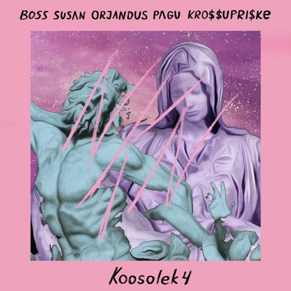
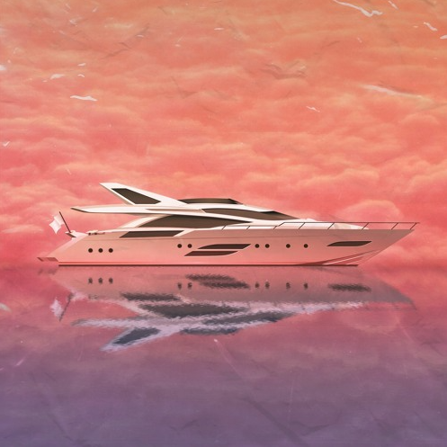
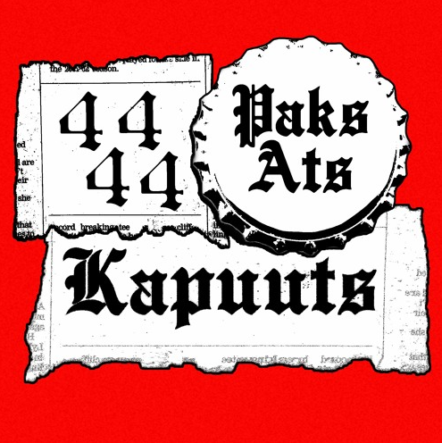
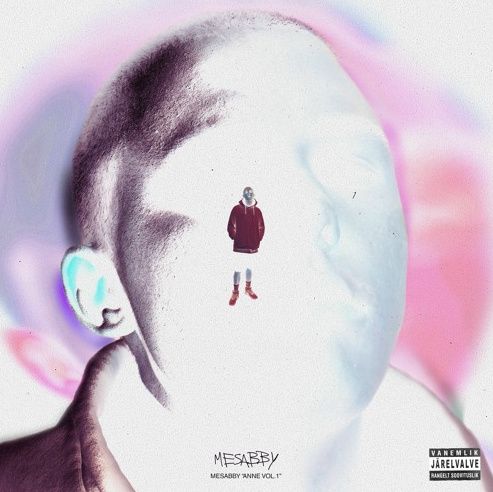

Tere! Siin on meie algne projekt - EstCloud. Idee sai alguse huvist Eesti underground hiphopi vastu, mille kasvupinnas on Soundcloud - tasuta muusikastriimimisteenus, mis on populaarne just vähemtuntud artistide seas. Tänapäeva infotulvas vajuks see muusika kiirelt unustuse hõlma, kuid leiame, et ka magamistoas lindistatud sahisevate klippide seas on pärleid, mida tallele panna ning võib-olla isegi populariseerida.
Uus & Kuum



